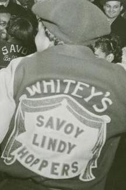
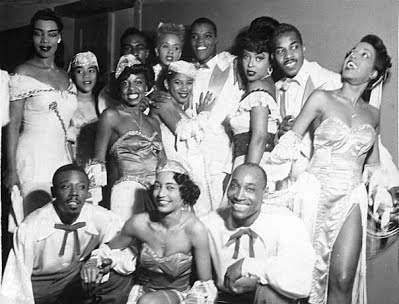

Compilée par Anne Dagenais
Mars 2019
L’histoire du Lindy Hop est incroyablement complexe, nuancée et controversée. Cette page est une tentative de partage d’informations et de ressources sur l’histoire de cette forme d’art. Elle est loin d’être exhaustive, mais elle est au moins un bon point de départ pour quiconque cherche à explorer les origines de cette danse fantastique.
Qu’est ce que le Lindy Hop?
Le Lindy Hop est une danse noire américaine qui a débuté à Harlem, New York, à la fin des années 1920. Elle a vu le jour dans le contexte de la “Renaissance de Harlem” : l’explosion culturelle de la diaspora noire après la migration massive des Noirs américains du sud vers le nord.
Le Lindy Hop évoque tour à tour la cadence des chants de travail africains-américains, la corporalité gospel, ou la formalité des danses de salon européennes. La musique et la danse ont été façonnées par l’expérience de l’oppression, de l’esclavage et de la ségrégation. Cependant, le Lindy Hop (également connu sous le nom de Jitterbug) est devenu principalement un emblème de la culture populaire et nationale américaine : appropriée par Hollywood et l’industrie culturelle dès les années 1930. En conséquence, il est souvent connu de nos jours comme la danse des GI et la “libération” de l’Europe par les forces alliées. L’africanité du Lindy Hop a presque été effacée.1 C’est pourquoi il est important de la souligner et de la célébrer.
Pourquoi la danse s’appelle le Lindy Hop?
Mattie Purnell, 1929
La date de création de la danse est intraçable. On pense que le “Lindy Hop” a reçu son nom lors d’un marathon de danse en juin 1928 au Rockland Palace à Harlem. Les danseur.ses du Savoy Ballroom, George “Shorty” Snowden et Mattie Purnell, se sont particulièrement distingué.es par leurs pas créatifs, rapides et novateurs, attirant l’œil d’un journaliste de Fox Movietone News.
Pendant une de ces compétitions, Shorty a décidé de faire un “breakaway”, c’est-à-dire d’envoyer sa partenaire en position ouverte, et d’improviser quelques pas en solo par lui-même. Au milieu de la monotonie du marathon, l’effet était électrique et même les musiciens se sont animés. Shorty avait créé quelque chose.
L’histoire raconte que, pour répondre à la curiosité du journaliste, Snowden surnomma spontanément sa création “Lindy Hop”, en référence à l’aviateur Charles Lindbergh qui venait de réaliser le premier vol transatlantique solo sans escale en mai 1927.2
Les origines
Le Lindy Hop a été dansé principalement par des danseurs noirs à partir des années 1920. Beaucoup d’entre eux vivaient à Harlem, où il y avait des clubs de danse tels que le Savoy Ballroom et l’Alhambra. Le Lindy Hop a émergé comme une réponse provocante et joyeuse aux difficultés financières causées par la Grande Dépression, les dures conditions de vie et le racisme systémique. La danse a évolué à partir de plusieurs formes de danse sociale qui l’ont précédée, telles que le Cakewalk, le Breakaway et le Charleston dansé à deux.
Le Savoy
Le Savoy Ballroom était le club de Lindy Hop le plus célèbre. À une époque de ségrégation et de conflits raciaux, le Savoy était l’une des institutions les plus intégrées sur le plan culturel et racial, et sa renommée était internationale.3 Des groupes dirigés par Chick Webb (le chef du groupe résident), Count Basie, Duke Ellington et Benny Goodman s’y sont produits, ainsi que les chanteuses légendaires Ella Fitzgerald et Billie Holiday.
Des danseur.ses de classe mondiale tels que «Shorty» George Snowden et «Big Bea», ainsi que des danseurs de deuxième génération tels que Al Minns, Leon James, Frankie Manning et Norma Miller dansaient au Savoy jusqu’aux petites heures du matin.
La troupe “Whitey’s Lindy Hoppers”4 ont également été formés au Savoy, lorsque le “bouncer” du club, Herbert “Whitey” White, a réuni certain.es des meilleur.es danseur.ses et est devenu leur agent de facto. Ces danseur.ses sont ensuite devenu.es des ambassadeurs et ambassadrices de la danse à l’écran, sur scène et lors de tournées mondiales.
 
Une chronologie du Lindy Hop
- ??? - 1920 - Précurseurs de la danse : Le Lindy Hop contient l’ADN de nombreuses formes de danse noire; incluant des formes de danse jazz vernaculaire, y compris la claquette, le Charleston dansé à deux, le cakewalk et le Texas Tommy (une danse née à San Francisco).
- 1929 - Lindy Hop apparaît dans un film : On peut voir le “breakaway”, précurseur proche du Lindy Hop, dans des images du film After Seben (1929).5 À ce stade, la danse ressemble à une sorte d’hybride de Lindy Hop et de Charleston.
- Années 1930-1940 - Lindy Hop à Hollywood : Dean Collins popularise le Lindy Hop de Los Angeles, tandis que la troupe “Les Lindy Hoppers de Whitey” joue dans des films comme A Day at the Races (1937) et Hellzapoppin (1941). Les danseur.ses étaient souvent filmé.es à part du reste du film, au cas où le public du Sud demanderait que des scènes avec les danseur.ses noir.es soient coupées.
- Années 1940 et suivantes - Succès et rejetons : Alors que les Lindy Hoppers et musiciens célèbres partent pour la Seconde Guerre mondiale, des danseur.ses blanc.hes comme Arthur Murray développent des versions simplifiées, comme le Jive et le East Coast Swing. Pendant ce temps, des musiciens noirs font évolué le jazz vers le bebop et la danse évolue avec lui.
- Des années 1980 à aujourd’hui - Resurgence : Un groupe de danseur.ses Suédois.es voit le Lindy Hop dans un film et demande à des personnes comme Frankie Manning et Al Minns de leur montrer comment ça se danse. Des scènes de danse et des communautés internationales se forment. Pendant ce temps, les danseur.ses noir.es continuent avec le hip hop et le house. Le Lindy Hop que nous dansons aujourd’hui est très différent du Lindy Hop des années 1930. Il est influencé par les danseur.ses d’origine, les danses qui ont vu le jour autour ou après le Lindy Hop — Carolina Shag, West Coast Swing, Boogie Woogie, St. Louis Shag, Balboa et plus encore — ainsi que par ceux et celles qui l’enseignent et le dansent. Alors que les danseur.ses racisé.es restent des contributeurs et contributrices important.es à la danse, la scène internationale est maintenant beaucoup plus blanche et plus riche que celle où elle a commencé. Il est important que nous honorions le passé tout en continuant d’amener la danse vers l’avenir. Le Lindy Hop est maintenant une communauté florissante comptant des dizaines de milliers de danseur.ses dans le monde entier.6
Ressources
20 Lindy Hoppers des années 1930 que tous les danseur.ses de swing devraient connaître : https://www.youtube.com/watch?v=fy2dR60-q1M
The Lindy par Margaret Batiuchok, NYU, Thèse de maîtrise, 16 mai 1988, Histoire de la danse swing : https://www.scribd.com/doc/36181005/The-Lindy-by-Margaret-Batiuchok-NYU-Masters-Thesis-16-May-1988-History-of-Swing-Dancing
2 Idem, p. 229-30.
3 Plaque commémorative dévoilée le 26 mai 2002 par Frankie Manning et Norma Miller à Harlem: https://upload.wikimedia.org/wikipedia/commons/a/a2/Savoyplaque_large.jpg
4 https://en.wikipedia.org/wiki/Whitey%27s_Lindy_Hoppers
5 Extrait du film After Seben avec commentaires : https://www.youtube.com/watch?v=MtuZeI3n6gM Ce court métrage avec son a été filmé dans une boîte de nuit de Harlem et mettait en vedette un danseur et comique de vaudeville blanc, James Barton, en “blackface”. Le blackface est une forme de maquillage théâtral utilisé principalement par des artistes non noirs pour représenter la caricature d’une personne noire. La pratique a gagné en popularité au 19ème siècle et a contribué à la propagation des stéréotypes raciaux. Au début du XXe siècle, le blackface se détacha du spectacle de ménestrels pour devenir une forme à part entière. Aux États-Unis, le blackface est en grande partie tombé en disgrâce au début du XXIe siècle et est maintenant généralement considéré comme raciste, bien que de nombreuses personnes l’utilisent encore. https://en.wikipedia.org/wiki/Blackface
6 Cette section est entièrement tirée du site Web Yehoodi, géré par Rik Panganiban, où vous pouvez trouver plus de ressources sur l’histoire du Lindy Hop: http://www.yehoodi.com/history?fbclid=IwAR3OpFVCULx4R-XK09g7H6FmJWBsyLyvbEAXM-1c_8etUIqAUiZ36fgHpIg
7 Il est important de noter la nature stéréotypée de l'expression faciale interprétée par Leon James à 2:53 et de réfléchir de manière critique à sa performance contemporaine : https://thesocietypages.org/socimages/2011/07/05/race-appropriation-lindy-hop-how-to-honor-our-heroes/